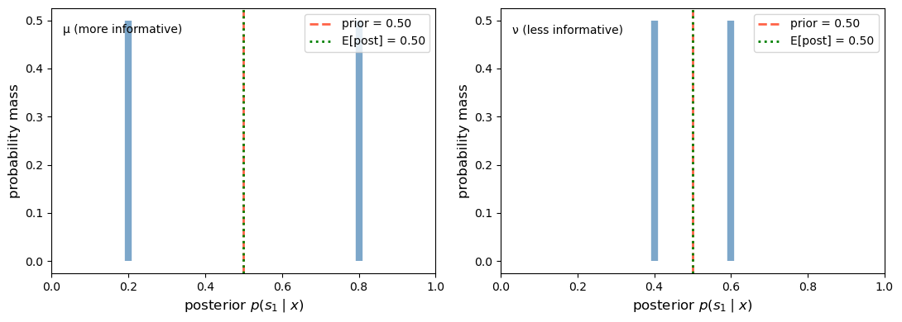
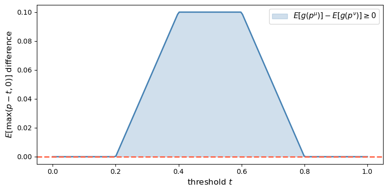
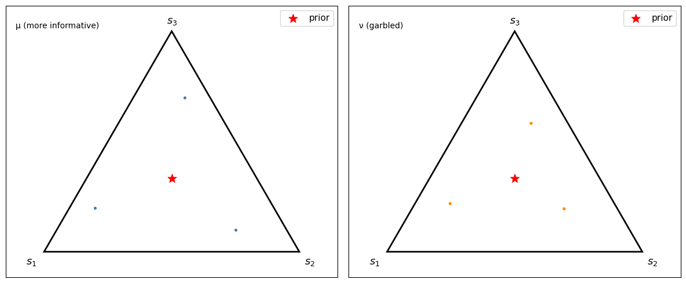
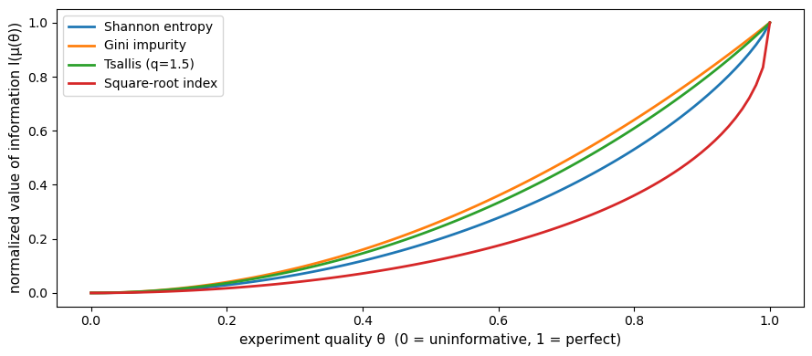
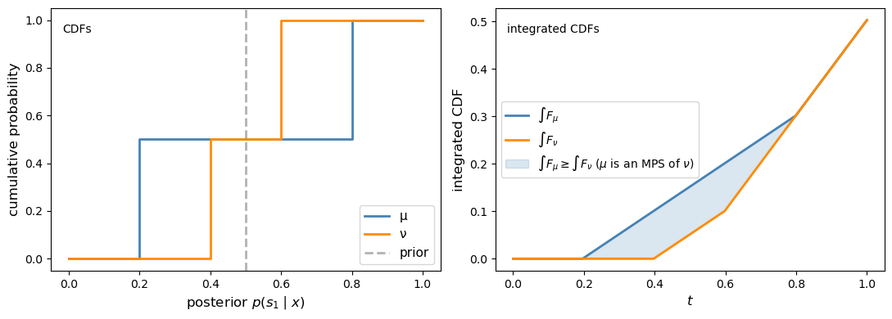
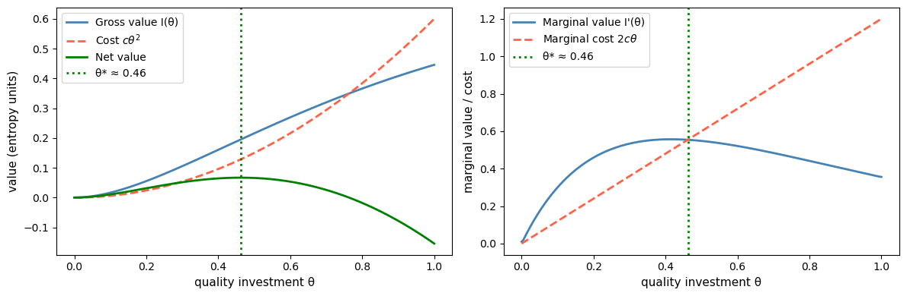
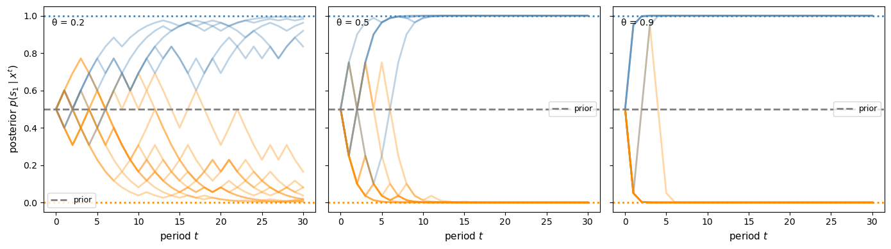
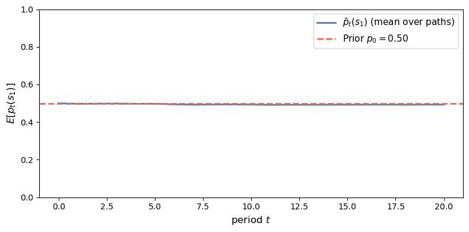

30. Blackwell’s Theorem on Comparing Experiments#
30.1. Overview#
This lecture studies Blackwell’s theorem [Blackwell, 1951, Blackwell, 1953] on ranking statistical experiments.
Our presentation brings in findings from a Bayesian interpretation of Blackwell’s theorem by Kihlstrom [1984].
Blackwell and Kihlstrom study statistical model-selection questions closely related to those encountered in this QuantEcon lecture Likelihood Ratio Processes and Bayesian Learning.
To appreciate the connection involved, it is helpful to appreciate how Blackwell’s notion of an experiment is related to the concept of a ‘‘probability distribution’’ or ‘‘parameterized statistical model’’ appearing in Likelihood Ratio Processes and Bayesian Learning
Blackwell studies a situation in which a decision maker wants to know the value of a state \(s\) that lives in a space \(S\).
For Blackwell, an experiment is a conditional probability model \(\{\mu(\cdot \mid s) : s \in S\}\), i.e., a family of probability distributions that are conditioned by the same state \(s \in S\).
We are free to interpret the “state” as a “parameter” or “parameter vector”.
In a two-state case \(S = \{s_1, s_2\}\), the two conditional densities \(f(\cdot) = \mu(\cdot \mid s_1)\) and \(g(\cdot) = \mu(\cdot \mid s_2)\) are the ones used repeatedly in our studies of classical hypothesis testing and Bayesian inference in this QuantEcon lecture Likelihood Ratio Processes and Bayesian Learning as well as several other lectures in this suite of QuantEcon lectures.
Kihlstrom [1984] interprets the question which experiment is more informative? as asking which conditional probability model allows a Bayesian decision maker with a prior over \(\{s_1, s_2\}\) to gather higher expected utility.
We’ll use the terms “signal” and “experiment” as synyomyms.
Thus, suppose that two signals, \(\tilde{x}_\mu\) and \(\tilde{x}_\nu\), are both informative about an unknown state \(\tilde{s}\).
Signal \(\mu\) is at least as informative as signal \(\nu\) if every Bayesian decision maker can attain weakly higher expected utility with \(\mu\) than with \(\nu\).
This economic criterion is equivalent to two statistical criteria:
Sufficiency (Blackwell): \(\tilde{x}_\nu\) can be generated from \(\tilde{x}_\mu\) by an additional randomization.
Uncertainty reduction (DeGroot [1962]): \(\tilde{x}_\mu\) lowers expected uncertainty at least as much as \(\tilde{x}_\nu\) for every concave uncertainty function.
Kihlstrom’s formulation focuses on the posterior distribution.
More informative experiments generate posterior distributions that are more dispersed in convex order.
In the two-state case, this becomes a mean-preserving-spread comparison on \([0, 1]\), which can be checked with the integrated-CDF test used for second-order stochastic dominance.
The lecture proceeds as follows:
Set up notation and define experiments as Markov matrices.
Define stochastic transformations using Markov kernels.
State the three equivalent criteria.
State and sketch the proof of the main theorem.
Develop the Bayesian interpretation via standard experiments and mean-preserving spreads.
Illustrate each idea with Python simulations.
We begin with some imports.
import numpy as np
import matplotlib.pyplot as plt
from scipy.optimize import minimize
np.random.seed(0)
30.2. Experiments and stochastic transformations#
30.2.1. The state space and experiments#
Let \(S = \{s_1, \ldots, s_N\}\) be a finite set of possible states of the world.
An experiment is described by the conditional distribution of an observed signal \(\tilde{x}\) given the state \(\tilde{s}\).
When the signal space is also finite, say \(X = \{x_1, \ldots, x_M\}\), an experiment reduces to an \(N \times M\) Markov matrix
Each row \(i\) gives the distribution of signals when the true state is \(s_i\).
μ = np.array([[0.6, 0.3, 0.1],
[0.1, 0.3, 0.6]])
Q = np.array([[1.0, 0.0],
[0.5, 0.5],
[0.0, 1.0]])
ν = μ @ Q
print("Experiment μ (3 signals, rows sum to 1):")
print(μ)
print("\nStochastic transformation Q (3 × 2):")
print(Q)
print("\nExperiment ν = μ @ Q (2 signals):")
print(ν)
print("\nRow sums μ:", μ.sum(axis=1))
print("Row sums ν:", ν.sum(axis=1))
Experiment μ (3 signals, rows sum to 1):
[[0.6 0.3 0.1]
[0.1 0.3 0.6]]
Stochastic transformation Q (3 × 2):
[[1. 0. ]
[0.5 0.5]
[0. 1. ]]
Experiment ν = μ @ Q (2 signals):
[[0.75 0.25]
[0.25 0.75]]
Row sums μ: [1. 1.]
Row sums ν: [1. 1.]
30.2.2. Stochastic transformations#
A stochastic transformation \(Q\) maps signals from one experiment to signals from another by further randomization.
In the discrete setting with \(M\) input signals and \(K\) output signals, \(Q\) is an \(M \times K\) Markov matrix: \(q_{lk} \geq 0\) and \(\sum_k q_{lk} = 1\) for every row \(l\).
Definition 30.1 (Sufficiency)
Experiment \(\mu\) is sufficient for \(\nu\) if there exists a stochastic transformation \(Q\) (an \(M \times K\) Markov matrix) such that
meaning that an observer of \(\tilde{x}_\mu\) can generate the distribution of \(\tilde{x}_\nu\) by passing their signal through \(Q\).
If you observe the more informative signal \(\tilde{x}_\mu\), then you can always throw away information to reproduce a less informative signal.
The reverse is not possible: a less informative signal cannot be enriched to recover what was lost.
We can verify this numerically using the two experiments \(\mu\) and \(\nu\) defined above.
The function below searches for a stochastic transformation \(Q\) that minimizes \(\|\nu - \mu \, Q\|\).
If an exact \(Q\) exists the residual will be close to zero; otherwise it will be large.
def find_stochastic_transform(μ, ν, tol=1e-8):
"""
Find a row-stochastic matrix Q that minimizes ||ν - μ @ Q||.
"""
_, M = μ.shape
_, K = ν.shape
def unpack(q_flat):
return q_flat.reshape(M, K)
def objective(q_flat):
Q = unpack(q_flat)
return np.linalg.norm(ν - μ @ Q)**2
constraints = [
{"type": "eq", "fun": lambda q_flat,
row=i: unpack(q_flat)[row].sum() - 1.0}
for i in range(M)
]
bounds = [(0.0, 1.0)] * (M * K)
Q0 = np.full((M, K), 1 / K).ravel()
result = minimize(
objective,
Q0,
method="SLSQP",
bounds=bounds,
constraints=constraints,
options={"ftol": tol, "maxiter": 1_000},
)
Q = unpack(result.x)
residual = np.linalg.norm(ν - μ @ Q)
return Q, residual
# Forward: find Q such that ν = μ @ Q (should succeed)
Q_fwd, res_fwd = find_stochastic_transform(μ, ν)
print("Forward (μ to ν):")
print(f" residual = {res_fwd:.2e}")
print(f" exact transformation exists: {res_fwd < 1e-6}")
# Reverse: find Q' such that μ = ν @ Q' (should fail)
Q_rev, res_rev = find_stochastic_transform(ν, μ)
print("\nReverse (ν to μ):")
print(f" residual = {res_rev:.2e}")
print(f" exact transformation exists: {res_rev < 1e-6}")
Forward (μ to ν):
residual = 5.05e-09
exact transformation exists: True
Reverse (ν to μ):
residual = 1.44e-01
exact transformation exists: False
The forward residual is close to zero: a stochastic transformation from \(\mu\) to \(\nu\) exists, confirming that \(\mu\) is sufficient for \(\nu\).
The reverse residual is large: no stochastic transformation can recover \(\mu\) from \(\nu\).
No stochastic transformation can undo the information loss.
The key is that the inverse of a stochastic transformation in general is not a stochastic transformation.
In fact, the only stochastic transformations whose inverses are also stochastic are permutation matrices, which merely relabel signals without losing any information.
30.3. Three equivalent criteria#
Blackwell’s theorem establishes that three different ways of comparing experiments all turn out to be equivalent.
30.3.1. Criterion 1: the economic criterion#
The first criterion compares experiments by their value to decision makers.
Let \(A\) be a compact convex set of actions and \(u: A \times S \to \mathbb{R}\) a bounded utility function.
A decision maker observes \(x \in X\), updates beliefs about \(\tilde{s}\) by Bayes’ rule, and chooses \(d(x) \in A\) to maximize expected utility.
Let \(p = (p_1, \ldots, p_N)\) be the prior over states, and write
for the probability simplex.
For fixed \(A\) and \(u\), the set of achievable expected-utility vectors under experiment \(\mu\) is
Definition 30.2 (Economic criterion)
\(\mu\) is at least as informative as \(\nu\) in the economic sense if
for every compact convex action set \(A\) and every bounded utility function \(u: A \times S \to \mathbb{R}\).
This criterion says that experiment \(\mu\) is better than experiment \(\nu\) if anything a decision maker can achieve after seeing \(\nu\), they can also achieve after seeing \(\mu\).
The reason is that a more informative experiment lets the agent imitate a less informative one by ignoring or garbling some of the extra information.
But the reverse need not be possible.
So \(B(\mu, A, u) \supseteq B(\nu, A, u)\) means that \(\mu\) gives the decision maker at least as many feasible expected-utility outcomes as \(\nu\).
Equivalently, every Bayesian decision maker attains weakly higher expected utility with \(\tilde{x}_\mu\) than with \(\tilde{x}_\nu\), for every prior \(p \in P\).
30.3.2. Criterion 2: the sufficiency criterion#
The second criterion uses the stochastic transformation idea introduced above.
Definition 30.3 (Blackwell sufficiency)
\(\mu \geq \nu\) in Blackwell’s sense if there exists a stochastic transformation \(Q\) from the signal space of \(\mu\) to the signal space of \(\nu\) such that
In matrix notation for finite experiments: \(\nu = \mu \, Q\).
30.3.3. Criterion 3: the uncertainty criterion#
The third criterion compares experiments by how much they reduce uncertainty about the state.
DeGroot [1962] calls any concave function \(U: P \to \mathbb{R}\) an uncertainty function.
The prototypical example is Shannon entropy:
Definition 30.4 (DeGroot uncertainty criterion)
\(\mu\) reduces expected uncertainty at least as much as \(\nu\) if, for every prior \(p \in P\) and every concave \(U: P \to \mathbb{R}\),
where \(\hat\mu^p\) is the distribution of posterior beliefs induced by experiment \(\mu\) under prior \(p\).
To see this, let \(Q = p^\mu(X)\) denote the random posterior induced by experiment \(\mu\).
Then \(Q\) has distribution \(\hat\mu^p\), so
Since \(U\) is concave, Jensen’s inequality gives
Hence
so any experiment weakly lowers expected uncertainty.
Kihlstrom’s standard-experiment construction will later let us compare posterior distributions under the uniform prior \(c = (1 / N, \ldots, 1 / N)\).
30.4. The main theorem#
Theorem 30.1 (Blackwell’s theorem)
The following three conditions are equivalent:
(i) Economic criterion: \(B(\mu, A, u) \supseteq B(\nu, A, u)\) for every compact convex \(A\) and every bounded utility function \(u\).
(ii) Sufficiency criterion: There exists a stochastic transformation \(Q\) from the signal space of \(\mu\) to the signal space of \(\nu\) such that \(\nu = Q \circ \mu\).
(iii) Uncertainty criterion: \(\int_P U(q)\,\hat\mu^p(dq) \leq \int_P U(q)\,\hat\nu^p(dq)\) for every prior \(p \in P\) and every concave \(U\).
See also Blackwell [1951], Bohnenblust et al. [1949], and DeGroot [1962].
The hard part is the equivalence between the economic and sufficiency criteria.
Sketch (ii \(\Rightarrow\) i): If \(\nu = \mu Q\), then any decision rule based on \(\tilde{x}_\nu\) can be replicated by first observing \(\tilde{x}_\mu\), then drawing a synthetic \(\tilde{x}_\nu\) from \(Q\), and then applying the same rule.
Sketch (i \(\Rightarrow\) ii): Since \(B(\mu, A, u) \supseteq B(\nu, A, u)\) for every \(A\) and \(u\), a separating-hyperplane (duality) argument implies the existence of a posterior-space mean-preserving kernel \(D\) sending the standard experiment of \(\nu\) into that of \(\mu\). Passing from these posterior laws back to the original signal spaces then yields the required garbling \(Q\) with \(\nu = \mu Q\). Thus \(D\) is an intermediate randomization on posterior beliefs, not literally the signal-space kernel \(Q\).
Sketch (ii \(\Rightarrow\) iii): Under a garbling, the posterior from the coarser experiment is the conditional expectation of the posterior from the finer experiment, so Jensen’s inequality gives the result for every concave \(U\).
Sketch (iii \(\Rightarrow\) ii): The converse, that the inequality for all concave \(U\) forces the existence of \(Q\), is proved in [Blackwell, 1953]. Kihlstrom’s posterior-based representation makes the geometry transparent.
30.5. Kihlstrom’s Bayesian interpretation#
30.5.1. Posteriors and standard experiments#
The key object in Kihlstrom’s analysis is the posterior belief vector.
When prior \(p\) holds and experiment \(\mu\) produces signal \(x\), Bayes’ rule gives
The posterior \(p^\mu(x) \in P\) is a random point in the simplex.
Property 30.1 (Mean preservation)
The prior \(p\) is the expectation of the posterior:
This is sometimes called the law of iterated expectations for beliefs.
For a fixed prior \(c\), Kihlstrom’s standard experiment replaces the raw signals of \(\mu\) with the posterior beliefs they generate.
Let \(\hat\mu^c\) denote the distribution over posteriors induced by \(\mu\) under prior \(c\). Mean preservation implies \(\int_P q \, \hat\mu^c(dq) = c\).
Two experiments are informationally equivalent when they induce the same posterior distribution.
The standard experiment strips away every detail of the signal except its posterior, so it provides a canonical Bayesian representation for comparing experiments.
A stochastic kernel on posterior beliefs lives on the simplex \(P\), whereas a Blackwell garbling \(Q\) lives on the original signal space. Kihlstrom’s construction uses the former to study convex order and then recovers the latter after passing to standard experiments.
Any two experiments that generate the same distribution over posteriors lead to identical decisions for every Bayesian decision maker, regardless of how different their raw signal spaces may look.
30.5.2. Mean-preserving spreads and Blackwell’s order#
Kihlstrom’s key reformulation is the following.
Theorem 30.2 (Kihlstrom’s Reformulation)
\(\mu \geq \nu\) in Blackwell’s sense if and only if \(\hat\mu^c\) is a mean-preserving spread of \(\hat\nu^c\); that is,
for every convex function \(g: P \to \mathbb{R}\).
Equivalently, \(\hat\mu^c\) is larger than \(\hat\nu^c\) in convex order.
A better experiment spreads posterior beliefs farther from the prior while preserving their mean.
To see this concretely, we define two experiments for the two-state case and compute their posteriors.
def compute_posteriors(μ, prior, tol=1e-14):
"""
Compute the posterior distribution for each signal realisation.
"""
N, M = μ.shape
signal_probs = μ.T @ prior
numerators = μ.T * prior
posteriors = np.zeros((M, N))
np.divide(
numerators,
signal_probs[:, None],
out=posteriors,
where=signal_probs[:, None] > tol,
)
return posteriors, signal_probs
def check_mean_preservation(posteriors, signal_probs, prior):
"""Verify E[posterior] == prior."""
expected_posterior = (posteriors * signal_probs[:, None]).sum(axis=0)
return expected_posterior, np.allclose(expected_posterior, prior)
N = 2
prior = np.array([0.5, 0.5])
μ_info = np.array([[0.8, 0.2],
[0.2, 0.8]])
ν_info = np.array([[0.6, 0.4],
[0.4, 0.6]])
post_μ, probs_μ = compute_posteriors(μ_info, prior)
post_ν, probs_ν = compute_posteriors(ν_info, prior)
print("Experiment μ (more informative):\n")
print("Signal probabilities:", probs_μ.round(3))
print("Posteriors (row = signal, col = state):")
print(post_μ.round(3))
mean_μ, ok_μ = check_mean_preservation(post_μ, probs_μ, prior)
print(f"E[posterior] = {mean_μ.round(4)} (equals prior: {ok_μ})")
print("\n Experiment ν (less informative):\n")
print("Signal probabilities:", probs_ν.round(3))
print("Posteriors:")
print(post_ν.round(3))
mean_ν, ok_ν = check_mean_preservation(post_ν, probs_ν, prior)
print(f"E[posterior] = {mean_ν.round(4)} (equals prior: {ok_ν})")
Experiment μ (more informative):
Signal probabilities: [0.5 0.5]
Posteriors (row = signal, col = state):
[[0.8 0.2]
[0.2 0.8]]
E[posterior] = [0.5 0.5] (equals prior: True)
Experiment ν (less informative):
Signal probabilities: [0.5 0.5]
Posteriors:
[[0.6 0.4]
[0.4 0.6]]
E[posterior] = [0.5 0.5] (equals prior: True)
For \(N = 2\) states, the simplex \(P\) is the unit interval \([0, 1]\) (the probability of state \(s_1\)).
We can directly plot the distribution of posteriors under experiments \(\mu\) and \(\nu\).
def plot_posterior_distributions(μ_matrix, ν_matrix, prior,
labels=("μ (more informative)",
"ν (less informative)")):
"""
For a two-state experiment, plot the distribution of posteriors
(i.e., the standard experiment distribution) on [0,1].
"""
posts_μ, probs_μ = compute_posteriors(μ_matrix, prior)
posts_ν, probs_ν = compute_posteriors(ν_matrix, prior)
fig, axes = plt.subplots(1, 2, figsize=(11, 4), sharey=False)
prior_val = prior[0]
for ax, posts, probs, label in zip(
axes, [posts_μ, posts_ν], [probs_μ, probs_ν], labels):
p_s1 = posts[:, 0]
ax.vlines(p_s1, 0, probs, linewidth=6, color="steelblue", alpha=0.7)
ax.axvline(prior_val, color="tomato", linestyle="--", linewidth=2,
label=f"prior = {prior_val:.2f}")
ax.set_xlim(0, 1)
ax.set_xlabel(r"posterior $p(s_1 \mid x)$", fontsize=12)
ax.set_ylabel("probability mass", fontsize=12)
mean_post = (p_s1 * probs).sum()
ax.axvline(mean_post, color="green", linestyle=":", linewidth=2,
label=f"E[post] = {mean_post:.2f}")
ax.text(0.03, 0.94, label, transform=ax.transAxes, va="top")
ax.legend()
plt.tight_layout()
plt.show()
plot_posterior_distributions(μ_info, ν_info, prior)

Fig. 30.1 Posterior distributions in the two-state case#
This is the mean-preserving spread in action: both distributions have the same mean (equal to the prior), but the more informative experiment \(\mu\) spreads its posteriors farther apart.
We can verify the mean-preserving spread condition numerically.
The key fact is that, up to an affine term, any convex function can be represented as a mixture of “call option” payoffs \(g_t(p) = \max(p - t, 0)\).
Because the two posterior distributions being compared have the same mean, that affine term cancels in the comparison.
So it suffices to check \(E[g_t(p^\mu)] \geq E[g_t(p^\nu)]\) for all thresholds \(t \in [0, 1]\).
def check_mps_convex_functions(μ_matrix, ν_matrix, prior, n_functions=200):
"""
Verify the mean-preserving spread condition using
convex functions g(p) = max(p - t, 0).
"""
posts_μ, probs_μ = compute_posteriors(μ_matrix, prior)
posts_ν, probs_ν = compute_posteriors(ν_matrix, prior)
p_μ = posts_μ[:, 0]
p_ν = posts_ν[:, 0]
thresholds = np.linspace(0, 1, n_functions)
diffs = []
for t in thresholds:
Eg_μ = (np.maximum(p_μ - t, 0) * probs_μ).sum()
Eg_ν = (np.maximum(p_ν - t, 0) * probs_ν).sum()
diffs.append(Eg_μ - Eg_ν)
fig, ax = plt.subplots(figsize=(8, 4))
ax.plot(thresholds, diffs, color="steelblue", linewidth=2)
ax.axhline(0, color="tomato", linestyle="--", linewidth=2)
ax.fill_between(thresholds, diffs, 0,
where=np.array(diffs) >= 0,
alpha=0.25, color="steelblue",
label="$E[g(p^μ)] - E[g(p^ν)] \\geq 0$")
ax.set_xlabel("threshold $t$", fontsize=12)
ax.set_ylabel(r"$E[\max(p-t,0)]$ difference", fontsize=12)
ax.legend(fontsize=11)
plt.tight_layout()
plt.show()
all_non_negative = all(d >= -1e-10 for d in diffs)
print(f"μ is a mean-preserving spread of ν: {all_non_negative}")
return diffs
_ = check_mps_convex_functions(μ_info, ν_info, prior)

Fig. 30.2 Convex-order check in the two-state case#
μ is a mean-preserving spread of ν: True
The difference \(E[g_t(p^\mu)] - E[g_t(p^\nu)]\) is non-negative for every threshold \(t\), confirming that \(\hat\mu^c\) is a mean-preserving spread of \(\hat\nu^c\) and therefore \(\mu \geq \nu\) in the Blackwell order.
30.6. Simulating the Blackwell order with many states#
We now move to a three-state example.
Experiment \(\mu\) is strongly correlated with the state, and experiment \(\nu\) is a garbling of \(\mu\).
N3 = 3
prior3 = np.array([1/3, 1/3, 1/3])
μ3 = np.array([[0.7, 0.2, 0.1],
[0.1, 0.7, 0.2],
[0.2, 0.1, 0.7]])
Q3 = np.array([[0.9, 0.05, 0.05],
[0.05, 0.8, 0.15],
[0.05, 0.15, 0.8]])
ν3 = μ3 @ Q3
print("μ (3×3):")
print(np.round(μ3, 2))
print("\nQ (garbling):")
print(np.round(Q3, 2))
print("\nν = μ @ Q:")
print(np.round(ν3, 3))
μ (3×3):
[[0.7 0.2 0.1]
[0.1 0.7 0.2]
[0.2 0.1 0.7]]
Q (garbling):
[[0.9 0.05 0.05]
[0.05 0.8 0.15]
[0.05 0.15 0.8 ]]
ν = μ @ Q:
[[0.645 0.21 0.145]
[0.135 0.595 0.27 ]
[0.22 0.195 0.585]]
For three states, posterior beliefs live in a 2-simplex.
Let’s visualize sampled posterior points under \(\mu\) and \(\nu\)
def sample_posteriors(μ_matrix, prior, n_draws=3000):
"""
Simulate n_draws observations from the experiment and compute
the resulting posterior beliefs.
Returns array of shape (n_draws, N).
"""
N, M = μ_matrix.shape
states = np.random.choice(N, size=n_draws, p=prior)
signals = np.array([np.random.choice(M, p=μ_matrix[s]) for s in states])
posteriors, _ = compute_posteriors(μ_matrix, prior)
return posteriors[signals]
def simplex_to_cart(pts):
"""Convert 3-simplex barycentric coordinates to 2-D Cartesian."""
corners = np.array([[0.0, 0.0],
[1.0, 0.0],
[0.5, np.sqrt(3)/2]])
return pts @ corners
def plot_simplex_posteriors(μ_matrix, ν_matrix, prior3, n_draws=3000):
posts_μ = sample_posteriors(μ_matrix, prior3, n_draws)
posts_ν = sample_posteriors(ν_matrix, prior3, n_draws)
cart_μ = simplex_to_cart(posts_μ)
cart_ν = simplex_to_cart(posts_ν)
prior_cart = simplex_to_cart(prior3[None, :])[0]
corners = np.array([[0.0, 0.0],
[1.0, 0.0],
[0.5, np.sqrt(3)/2]])
fig, axes = plt.subplots(1, 2, figsize=(12, 5))
panel_labels = ["μ (more informative)", "ν (garbled)"]
data = [(cart_μ, "steelblue"), (cart_ν, "darkorange")]
labels = ["$s_1$", "$s_2$", "$s_3$"]
offsets = [(-0.07, -0.05), (0.02, -0.05), (-0.02, 0.03)]
for ax, (cart, c), panel_label in zip(axes, data, panel_labels):
tri = plt.Polygon(corners, fill=False, edgecolor="black", linewidth=2)
ax.add_patch(tri)
ax.scatter(cart[:, 0], cart[:, 1], s=4, alpha=0.25, color=c)
ax.scatter(*prior_cart, s=120, color="red", zorder=5,
label="prior", marker="*")
for i, (lbl, off) in enumerate(zip(labels, offsets)):
ax.text(corners[i][0] + off[0], corners[i][1] + off[1],
lbl, fontsize=13)
ax.set_xlim(-0.15, 1.15)
ax.set_ylim(-0.1, np.sqrt(3)/2 + 0.1)
ax.set_aspect("equal")
ax.set_xticks([])
ax.set_yticks([])
ax.text(0.03, 0.94, panel_label, transform=ax.transAxes, va="top")
ax.legend(fontsize=11, loc="upper right")
plt.tight_layout()
plt.show()
plot_simplex_posteriors(μ3, ν3, prior3)

Fig. 30.3 Sampled posterior points on the 2-simplex#
Because this example has only three signals, each panel consists of three posterior atoms sampled repeatedly rather than a continuous cloud.
Under \(\mu\), the sampled posterior points reach farther toward the vertices.
Under the garbled experiment \(\nu\), the sampled posterior points stay closer to the center.
30.7. The DeGroot uncertainty function#
30.7.1. Concave uncertainty functions and the value of information#
[DeGroot, 1962] formalizes the value of information through an uncertainty function \(U: P \to \mathbb{R}\).
In DeGroot’s axiomatization, an uncertainty function is:
Concave: by Jensen, observing any signal weakly reduces expected uncertainty.
Symmetric: it depends on the components of \(p\), not their labeling.
Normalized: it is maximized at \(p = (1/N, \ldots, 1/N)\) and minimized at vertices.
The value of experiment \(\mu\) given prior \(p\) is
This quantity is the expected reduction in uncertainty.
Blackwell’s order is equivalent to the statement that \(I(\tilde{x}_\mu; \tilde{s}; U) \geq I(\tilde{x}_\nu; \tilde{s}; U)\) for every concave \(U\).
30.7.2. Shannon entropy as a special case#
The canonical uncertainty function is Shannon entropy
Under the uniform prior \(c = (1/N, \ldots, 1/N)\), DeGroot’s value formula becomes
where \(H(\tilde{s} \mid \tilde{x}_\mu)\) is the conditional entropy of the state given the signal.
To see why, write \(H(\tilde{s} \mid \tilde{x}_\mu) = \sum_x \Pr(\tilde{x}_\mu = x) \, H(\tilde{s} \mid \tilde{x}_\mu = x)\), where each conditional entropy term equals \(-\sum_i p_i^\mu(x) \log p_i^\mu(x) = U_H(p^\mu(x))\).
Substituting into DeGroot’s formula gives \(I = U_H(c) - \mathbb{E}[U_H(p^\mu)] = \log N - H(\tilde{s} \mid \tilde{x}_\mu)\), which is exactly the mutual information between \(\tilde{x}_\mu\) and \(\tilde{s}\).
Note
The Blackwell ordering implies the entropy-based inequality, but the converse fails: entropy alone does not pin down the full Blackwell ordering.
Two experiments can have the same mutual information yet differ in Blackwell rank, because a single concave function cannot detect all differences in the dispersion of posteriors.
The full Blackwell ordering requires the inequality to hold for every concave \(U\), not just Shannon entropy.
def entropy(p, ε=1e-12):
"""Shannon entropy of a probability vector."""
p = np.asarray(p, dtype=float)
p = np.clip(p, ε, 1.0)
return -np.sum(p * np.log(p))
def degroot_value(μ_matrix, prior, U_func):
"""
Compute DeGroot's value of information I = U(prior) - E[U(posterior)].
"""
posts, probs = compute_posteriors(μ_matrix, prior)
prior_uncertainty = U_func(prior)
expected_post_uncertainty = sum(
probs[j] * U_func(posts[j]) for j in range(len(probs)))
return prior_uncertainty - expected_post_uncertainty
def gini_impurity(p):
"""Gini impurity: 1 - sum(p_i^2)."""
return 1.0 - np.sum(np.asarray(p)**2)
def tsallis_entropy(p, q=2):
"""Tsallis entropy of order q (concave for q>1)."""
p = np.clip(p, 1e-12, 1.0)
return (1 - np.sum(p**q)) / (q - 1)
def tsallis_q15(p):
"""Tsallis entropy with q=1.5 for an independent concavity check."""
return tsallis_entropy(p, q=1.5)
def sqrt_index(p):
"""Concave uncertainty index based on sum(sqrt(p_i))."""
p = np.clip(np.asarray(p), 0.0, 1.0)
return np.sum(np.sqrt(p)) - 1.0
uncertainty_functions = {
"Shannon entropy": entropy,
"Gini impurity": gini_impurity,
"Tsallis (q=1.5)": tsallis_q15,
"Square-root index": sqrt_index,
}
header = (f"{'Uncertainty function':<22} "
f"{'I(μ)':<10} {'I(ν)':<10} "
f"{'I(μ)>=I(ν)?'}")
print(header)
print("-" * 58)
for name, U in uncertainty_functions.items():
I_μ = degroot_value(μ_info, prior, U)
I_ν = degroot_value(ν_info, prior, U)
print(f"{name:<22} {I_μ:<10.4f} {I_ν:<10.4f} {I_μ >= I_ν - 1e-10}")
Uncertainty function I(μ) I(ν) I(μ)>=I(ν)?
----------------------------------------------------------
Shannon entropy 0.1927 0.0201 True
Gini impurity 0.1800 0.0200 True
Tsallis (q=1.5) 0.1958 0.0213 True
Square-root index 0.0726 0.0072 True
As predicted by the theorem, \(I(\mu) \geq I(\nu)\) for every concave uncertainty function once we know \(\mu \geq \nu\) in the Blackwell sense.
30.7.3. Value of information as a function of experiment quality#
We now parameterize a continuum of experiments between the uninformative and perfectly informative cases.
For \(N = 2\) states, a natural family is
The first term is the completely mixed matrix and \(I_2\) is the identity.
def make_experiment(θ, N=2):
"""Parameterized experiment: θ=0 is uninformative, θ=1 is perfect."""
return (1 - θ) * np.ones((N, N)) / N + θ * np.eye(N)
θs = np.linspace(0, 1, 100)
prior2 = np.array([0.5, 0.5])
fig, ax = plt.subplots(figsize=(9, 4))
for name, U in uncertainty_functions.items():
values = [degroot_value(make_experiment(θ), prior2, U) for θ in θs]
vmin, vmax = values[0], values[-1]
normed = (np.array(values) - vmin) / (vmax - vmin + 1e-15)
ax.plot(θs, normed, label=name, linewidth=2)
ax.set_xlabel("experiment quality θ (0 = uninformative, 1 = perfect)",
fontsize=11)
ax.set_ylabel("normalized value of information I(μ(θ))", fontsize=11)
ax.legend(fontsize=10)
plt.tight_layout()
plt.show()

Fig. 30.4 Value of information and experiment quality#
Every concave uncertainty function assigns weakly higher value to a more informative experiment.
30.8. Connection to second-order stochastic dominance#
A random variable \(X\) second-order stochastically dominates \(Y\) (written \(X \succeq_{\text{SOSD}} Y\)) if \(E[u(X)] \geq E[u(Y)]\) for every concave function \(u\). Equivalently, \(Y\) is a mean-preserving spread of \(X\).
The uncertainty-function representation makes the connection to SOSD explicit.
Because \(U\) is concave, \(-U\) is convex, and the condition
is precisely the statement that \(\hat\mu^c\) dominates \(\hat\nu^c\) in convex order on \(P\).
When \(N = 2\), posterior beliefs are scalars in \([0, 1]\), and the SOSD comparison reduces to the classical integrated-CDF test.
Specifically, \(\hat\mu^c\) is a mean-preserving spread of \(\hat\nu^c\) if and only if \(\int_0^t F_\mu(s)\,ds \geq \int_0^t F_\nu(s)\,ds\) for all \(t \in [0,1]\), where \(F_\mu\) and \(F_\nu\) are the CDFs of the posterior on \(s_1\) under each experiment. Equivalently, in SOSD language, the less informative posterior under \(\nu\) dominates the more dispersed posterior under \(\mu\).
We can verify this graphically for the two-state example above
def cdf_data_1d(weights, values):
"""Sort support points and cumulative masses for a discrete distribution."""
idx = np.argsort(values)
sorted_vals = values[idx]
sorted_wts = weights[idx]
cum_mass = np.cumsum(sorted_wts)
return sorted_vals, cum_mass
def plot_sosd_posteriors(μ_matrix, ν_matrix, prior):
"""Plot CDFs and integrated CDFs for the posterior-on-s1 distributions."""
posts_μ, probs_μ = compute_posteriors(μ_matrix, prior)
posts_ν, probs_ν = compute_posteriors(ν_matrix, prior)
p_μ = posts_μ[:, 0]
p_ν = posts_ν[:, 0]
sv_μ, cm_μ = cdf_data_1d(probs_μ, p_μ)
sv_ν, cm_ν = cdf_data_1d(probs_ν, p_ν)
fig, axes = plt.subplots(1, 2, figsize=(11, 4))
ax = axes[0]
for sv, cm, lbl, c in [(sv_μ, cm_μ, "μ", "steelblue"),
(sv_ν, cm_ν, "ν", "darkorange")]:
xs = np.concatenate([[0], sv, [1]])
ys = np.concatenate([[0], cm, [1]])
ax.step(xs, ys, where="post", label=lbl, color=c, linewidth=2)
ax.axvline(prior[0], linestyle="--", color="gray", alpha=0.6, linewidth=2,
label="prior")
ax.set_xlabel(r"posterior $p(s_1 \mid x)$", fontsize=12)
ax.set_ylabel("cumulative probability", fontsize=12)
ax.text(0.03, 0.94, "CDFs", transform=ax.transAxes, va="top")
ax.legend(fontsize=11)
ax2 = axes[1]
grid = np.linspace(0, 1, 200)
def integrated_cdf(sorted_vals, cum_mass, grid):
cdf = np.array([cum_mass[sorted_vals <= t].max()
if np.any(sorted_vals <= t) else 0.0
for t in grid])
return np.cumsum(cdf) * (grid[1] - grid[0])
int_μ = integrated_cdf(sv_μ, cm_μ, grid)
int_ν = integrated_cdf(sv_ν, cm_ν, grid)
ax2.plot(grid, int_μ, label=r"$\int F_\mu$", color="steelblue", linewidth=2)
ax2.plot(grid, int_ν, color="darkorange",
label=r"$\int F_\nu$", linewidth=2)
ax2.fill_between(grid, int_ν, int_μ,
where=int_μ >= int_ν,
alpha=0.2, color="steelblue",
label=(r"$\int F_\mu \geq \int F_\nu$"
r" ($\mu$ is an MPS of $\nu$)"))
ax2.set_xlabel(r"$t$", fontsize=12)
ax2.set_ylabel("integrated CDF", fontsize=12)
ax2.text(0.03, 0.94, "integrated CDFs", transform=ax2.transAxes, va="top")
ax2.legend(fontsize=10)
plt.tight_layout()
plt.show()
plot_sosd_posteriors(μ_info, ν_info, prior)

Fig. 30.5 Integrated-CDF check in the two-state case#
30.9. Application 1: product quality information#
Kihlstrom [1974] applies Blackwell’s theorem to consumer demand for information about product quality.
The unknown state \(\tilde{s}\) is a product parameter \(\theta\).
A consumer can purchase \(\lambda\) units of information at cost \(c(\lambda)\).
As \(\lambda\) rises, the experiment becomes more informative in the Blackwell sense.
The Blackwell order says that, absent costs, more information is always better for every expected-utility maximizer.
With costs, the consumer chooses quality investment \(\theta\) to maximize net value.
If quality investment translates into experiment accuracy with diminishing returns – say, accuracy \(\phi(\theta) = 1 - e^{-a\theta}\) for a rate parameter \(a\) – then the marginal value of information eventually decreases in \(\theta\).
With a convex cost \(c(\theta) = c \, \theta^2\), the increasing marginal cost eventually overtakes the declining marginal value, producing an interior optimum.
def gross_value(θ, prior2, U=entropy, rate=2):
"""Gross value of quality investment θ (diminishing returns)."""
accuracy = 1 - np.exp(-rate * θ)
μ_t = (1 - accuracy) * np.ones((2, 2)) / 2 + accuracy * np.eye(2)
return degroot_value(μ_t, prior2, U)
θ_fine = np.linspace(0, 1, 200)
c = 0.6
gross_vals = np.array([gross_value(θ, prior2) for θ in θ_fine])
cost_vals = c * θ_fine**2
net_vals = gross_vals - cost_vals
marginal_vals = np.gradient(gross_vals, θ_fine)
marginal_cost = 2 * c * θ_fine
opt_idx = int(np.argmax(net_vals))
fig, axes = plt.subplots(1, 2, figsize=(12, 4))
ax = axes[0]
ax.plot(θ_fine, gross_vals,
label="Gross value I(θ)",
color="steelblue", linewidth=2)
ax.plot(θ_fine, cost_vals,
label=r"Cost $c\theta^2$",
color="tomato", linestyle="--", linewidth=2)
ax.plot(θ_fine, net_vals,
label="Net value", color="green", linewidth=2)
ax.axvline(θ_fine[opt_idx], color="green",
linestyle=":", linewidth=2,
label=f"θ* ≈ {θ_fine[opt_idx]:.2f}")
ax.set_xlabel("quality investment θ", fontsize=11)
ax.set_ylabel("value (entropy units)", fontsize=11)
ax.legend(fontsize=10)
ax2 = axes[1]
ax2.plot(θ_fine, marginal_vals,
label="Marginal value I'(θ)",
color="steelblue", linewidth=2)
ax2.plot(θ_fine, marginal_cost,
label=r"Marginal cost $2c\theta$",
color="tomato", linestyle="--", linewidth=2)
ax2.axvline(θ_fine[opt_idx], color="green",
linestyle=":", linewidth=2,
label=f"θ* ≈ {θ_fine[opt_idx]:.2f}")
ax2.set_xlabel("quality investment θ", fontsize=11)
ax2.set_ylabel("marginal value / cost", fontsize=11)
ax2.legend(fontsize=10)
plt.tight_layout()
plt.show()

Fig. 30.6 Information demand with a quadratic cost#
The optimal investment \(\theta^*\) occurs where marginal value equals marginal cost.
Because experiment accuracy has diminishing returns in \(\theta\), the marginal value of investment eventually falls below the rising marginal cost, yielding a genuine interior optimum.
Raising \(c\) shifts the marginal cost curve up and reduces \(\theta^*\), while a more asymmetric prior shifts the marginal value curve and changes the optimum.
30.10. Application 2: sequential experimental design#
DeGroot [1962] applies the uncertainty-function framework to sequential experimental design.
Each period a statistician observes one draw and updates the posterior.
The question is which sequence of experiments minimizes cumulative expected uncertainty.
If one experiment is more informative than another at every stage, then the Blackwell order favors using the better experiment at every date.
We now simulate sequential belief updating for experiments of different quality.
def sequential_update(μ_matrix, prior, T=20, seed=0):
"""Simulate T sequential belief updates under experiment μ."""
rng = np.random.default_rng(seed)
N, M = μ_matrix.shape
beliefs = np.zeros((T + 1, N))
beliefs[0] = prior.copy()
true_state = rng.choice(N, p=prior)
for t in range(T):
p = beliefs[t]
signal = rng.choice(M, p=μ_matrix[true_state])
unnorm = μ_matrix[:, signal] * p
beliefs[t + 1] = unnorm / unnorm.sum()
return beliefs, true_state
def plot_sequential_beliefs(θs_compare, prior2, T=25):
fig, axes = plt.subplots(1, len(θs_compare), figsize=(14, 4), sharey=True)
for ax, θ in zip(axes, θs_compare):
μ_t = make_experiment(θ, N=2)
for seed in range(15):
beliefs, ts = sequential_update(μ_t, prior2, T=T, seed=seed)
c = "steelblue" if ts == 0 else "darkorange"
ax.plot(beliefs[:, 0], alpha=0.35, color=c, linewidth=2)
ax.axhline(prior2[0], linestyle="--", color="gray", linewidth=2,
label="prior")
ax.axhline(1.0, linestyle=":", color="steelblue", linewidth=2)
ax.axhline(0.0, linestyle=":", color="darkorange", linewidth=2)
ax.set_xlabel(r"period $t$", fontsize=11)
if θ == θs_compare[0]:
ax.set_ylabel(r"posterior $p(s_1 \mid x^t)$", fontsize=11)
ax.set_ylim(-0.05, 1.05)
ax.text(0.03, 0.94, f"θ = {θ}", transform=ax.transAxes, va="top")
ax.legend(fontsize=9)
plt.tight_layout()
plt.show()
plot_sequential_beliefs([0.2, 0.5, 0.9], prior2, T=30)

Fig. 30.7 Sequential posterior paths for different experiment qualities#
More informative experiments make beliefs converge faster to the truth.
Under the correct prior, the posterior process is a martingale.
def check_martingale_mean(μ_matrix, prior, T=15, n_paths=2000, seed=0):
"""
Simulate many belief paths and check E[p_t] = p_0.
"""
rng = np.random.default_rng(seed)
N, M = μ_matrix.shape
all_paths = np.zeros((n_paths, T + 1, N))
for k in range(n_paths):
true_state = rng.choice(N, p=prior)
p = prior.copy()
all_paths[k, 0] = p
for t in range(T):
signal = rng.choice(M, p=μ_matrix[true_state])
unnorm = μ_matrix[:, signal] * p
p = unnorm / unnorm.sum()
all_paths[k, t + 1] = p
mean_path = all_paths[:, :, 0].mean(axis=0)
fig, ax = plt.subplots(figsize=(8, 4))
ax.plot(mean_path, color="steelblue", linewidth=2,
label=r"$\bar p_t(s_1)$ (mean over paths)")
ax.axhline(prior[0], linestyle="--", color="tomato", linewidth=2,
label=fr"Prior $p_0 = {prior[0]:.2f}$")
ax.set_xlabel(r"period $t$", fontsize=12)
ax.set_ylabel(r"$E[p_t(s_1)]$", fontsize=12)
ax.legend(fontsize=11)
ax.set_ylim(0, 1)
plt.tight_layout()
plt.show()
print(f"Prior = {prior[0]:.4f}")
print(f"Average mean belief across dates: {mean_path.mean():.4f}")
check_martingale_mean(μ_info, prior, T=20, n_paths=5000)

Fig. 30.8 Unconditional implication of the posterior martingale property#
Prior = 0.5000
Average mean belief across dates: 0.4942
The simulated cross-sectional mean stays close to the prior at every date.
This is the unconditional implication of the posterior martingale property.
30.11. Summary#
Blackwell’s theorem identifies a partial order on statistical experiments with three equivalent characterizations:
Criterion |
Condition |
|---|---|
Economic |
Every decision maker weakly prefers \(\mu\) to \(\nu\): \(B(\mu, A, u) \supseteq B(\nu, A, u)\) |
Sufficiency |
\(\nu\) is a garbling of \(\mu\): \(\nu = \mu Q\) for some Markov \(Q\) |
Uncertainty |
\(\mu\) reduces expected uncertainty more for every prior \(p\) and every concave \(U\) |
Kihlstrom’s Bayesian exposition places the posterior distribution at the center.
A more informative experiment generates a more dispersed posterior distribution with the same mean prior.
The right probabilistic language is convex order on the simplex of posterior beliefs.
In the two-state case this reduces to the familiar SOSD / integrated-CDF test on \([0, 1]\).
DeGroot’s contribution is to extend the comparison from particular utility functions to the full class of concave uncertainty functions.
30.12. The Data Processing Inequality and Coarse-Graining#
Blackwell’s condition that \(\nu = \mu Q\) for some Markov kernel \(Q\) is the same mathematical operation that underlies the data processing inequality (DPI) and the coarse-graining theorem in information theory, information geometry, and machine learning.
30.12.1. The DPI for f-divergences#
An f-divergence between two probability distributions \(P\) and \(Q\) over a finite space \(\Omega\) is
where \(f : (0,\infty) \to \mathbb{R}\) is a convex function with \(f(1) = 0\).
Special cases include:
Divergence |
Generator \(f(t)\) |
|---|---|
KL-divergence |
\(t \log t\) |
Squared Hellinger \(H^2\) |
\((\sqrt{t} - 1)^2 / 2\) |
Total variation TV |
\(\lvert t - 1 \rvert / 2\) |
Chi-squared \(\chi^2\) |
\((t-1)^2\) |
The class of f-divergences was introduced independently by Ali and Silvey [1966], Csiszár [1963], and Morimoto [1963]; see also Liese [2012].
Theorem 30.3 (Data Processing Inequality)
For any f-divergence \(D_f\) and any Markov kernel (stochastic transformation) \(\kappa\), with \(P \kappa\) denoting the image of \(P\) under \(\kappa\), we have
If \(\kappa\) is induced by a sufficient statistic for the pair \(\{P, Q\}\), then equality holds.
A converse of this form requires additional hypotheses; a clean binary-model characterization is given below.
The proof follows from Jensen’s inequality applied to the convex function \(f\), using the fact that \(\kappa\) is a stochastic matrix [Csiszár, 1963].
30.12.2. Connection to Blackwell’s sufficiency condition#
In Blackwell’s framework, \(\mu\) and \(\nu\) are experiments over the same state space \(S = \{s_1, \ldots, s_N\}\).
For two states, each experiment has two rows: \(\mu_1 = \mu(s_1, \cdot)\) and \(\mu_2 = \mu(s_2, \cdot)\).
If \(\nu = \mu Q\) (i.e., \(\nu\) is a garbling of \(\mu\)), then the pair \((\nu_1, \nu_2) = (\mu_1 Q, \mu_2 Q)\) is obtained by applying the Markov kernel \(Q\) to the pair \((\mu_1, \mu_2)\).
The coarse-graining theorem then implies immediately:
whenever \(\mu \geq \nu\) in the Blackwell order.
So a more informative experiment always produces more separated conditional signal distributions, in the sense of every f-divergence simultaneously.
The DPI is thus a statement about the distinguishability of states: garbling an experiment makes the states harder to tell apart under every statistical measure of separability.
For binary experiments, the equality condition links the DPI directly back to Blackwell: \(D_f(\mu_1 Q \| \mu_2 Q) = D_f(\mu_1 \| \mu_2)\) for some strictly convex \(f\) if and only if \(Q\) is a sufficient statistic for \((\mu_1, \mu_2)\).
Once sufficiency holds, equality follows for every convex \(f\) [Liese, 2012].
30.12.3. Information geometry: Chentsov’s theorem#
The DPI has an infinitesimal, differential-geometric companion.
Chentsov’s theorem [Čencov, 1981] states that the Fisher information matrix \(I_F(\theta)\) is, up to a constant rescaling, the unique Riemannian metric on a statistical manifold that contracts under every Markov morphism (coarse-graining):
Equality holds if and only if \(\kappa\) is a sufficient statistic for \(\theta\).
The uniqueness clause is deep: it says that the Fisher information is not merely one metric that happens to contract under coarse-graining, but the only one with that property.
See Amari and Nagaoka [2000] for a thorough treatment of information geometry and its connections to sufficiency.
30.12.4. The information bottleneck in machine learning#
The information bottleneck method of Tishby et al. [1999] provides a prominent application of the DPI in machine learning.
Given a joint distribution \(p(X, Y)\) over an input \(X\) and a target \(Y\), the goal is to find a compressed representation \(T\), formed by a stochastic mapping \(p(T \mid X)\), that retains as much information about \(Y\) as possible while using as few bits as possible to describe \(X\).
The method minimizes the Lagrangian
where \(I(\cdot\,;\,\cdot)\) denotes mutual information and \(\beta \geq 0\) governs the compression–relevance trade-off.
Because \(Y - X - T\) forms a Markov chain (T is derived from X alone), the DPI implies
with equality if and only if \(T\) is a sufficient statistic for \(Y\) given \(X\).
The Blackwell ordering explains why no deterministic or random post-processing of \(X\) can increase the mutual information with \(Y\): any Markov kernel applied to \(X\) is a garbling in Blackwell’s sense, and the DPI is the mutual-information form of the coarse-graining theorem.
In machine learning language the information bottleneck searches among all garblings of \(X\) for the one that best preserves relevant information about \(Y\) subject to a compression budget.
In a deep neural network with input \(X\) and target \(Y\) and layers \(X \to T_1 \to T_2 \to \cdots \to T_L \to \hat{Y}\), each layer’s representation is a garbling of the previous one.
The DPI then implies the chain of inequalities
so successive layers can only lose, never gain, information about \(Y\).
This observation was placed at the center of the study of what deep networks learn by [Shwartz-Ziv and Tishby, 2017].
Fig. 30.4 already illustrates this: as experiment quality \(\theta\) increases, every measure of informativeness rises monotonically.
The DPI says the same thing in reverse: garbling (decreasing \(\theta\)) can only contract these measures.
30.12.5. Summary of the DPI–Blackwell correspondence#
The table below collects the precise correspondence between Blackwell’s framework and the data-processing and coarse-graining literature.
Blackwell / DeGroot |
Data processing / coarse-graining |
|---|---|
Garbling \(\nu = \mu Q\) |
Applying Markov kernel \(\kappa\) to a pair \((P, Q) = (\mu_1, \mu_2)\) |
\(\mu \geq \nu\) in Blackwell order |
\(D_f(\mu_1 | \mu_2) \geq D_f(\nu_1 | \nu_2)\) for every f-divergence |
Sufficiency (\(Q\) discards nothing) |
Equality in DPI; in binary models, one strictly convex \(f\) already characterizes sufficiency |
DeGroot value \(I(\mu; U_H)\) |
Mutual information \(I(\tilde{x}_\mu;\, \tilde{s})\) (Shannon DPI) |
Posterior spreads under \(\mu\) vs \(\nu\) |
\(D_f\) between rows larger under \(\mu\) |
Blackwell theorem (economic \(\Leftrightarrow\) garbling) |
DPI for all \(f\) \(\Leftrightarrow\) single Markov kernel witnesses dominance |
Chentsov’s uniqueness theorem |
Fisher information is the unique coarse-graining-contracting metric |
Information bottleneck \(I(T;Y) \leq I(X;Y)\) |
DPI for mutual information applied to Markov chain \(Y{-}X{-}T\) |
30.13. Relation to Bayesian likelihood-ratio learning#
The lecture Likelihood Ratio Processes and Bayesian Learning is a dynamic two-state special case of the framework developed here.
Let \(S = \{s_1, s_2\}\) with \(s_1 \leftrightarrow f\) and \(s_2 \leftrightarrow g\), where \(f\) and \(g\) are the two candidate data-generating densities.
Then a single observation is a Blackwell experiment with rows \(f(\cdot)\) and \(g(\cdot)\), and the history \(w^t = (w_1, \ldots, w_t)\) defines a richer experiment \(\mu_t\).
Because one can always discard the last \(t-s\) observations, \(\mu_t\) Blackwell-dominates \(\mu_s\) for every \(t > s\).
The likelihood-ratio process
is a sufficient statistic for \(\mu_t\), and the posterior
is Kihlstrom’s standard experiment in this two-state setting.
Its martingale property, \(E[\pi_t] = \pi_0\), is exactly the mean-preservation result proved above for posterior distributions.
Likewise, \(\mu_t \geq \mu_s\) implies that the distribution of \(\pi_t\) is a mean-preserving spread of the distribution of \(\pi_s\), so additional data pushes beliefs farther toward \(0\) and \(1\) while lowering expected uncertainty under every concave uncertainty function.
30.13.1. Summary table#
The table below records the dictionary between the two lectures without repeating the earlier arguments.
Concept in this lecture |
|
|---|---|
States \(\{f, g\}\) |
State space \(S = \{s_1, s_2\}\) |
Densities \(f(\cdot)\), \(g(\cdot)\) |
Rows of experiment matrix \(\mu\) |
Single draw \(w_t\) |
Blackwell experiment with continuous signal space |
History \(w^t\) of \(t\) IID draws |
Richer experiment \(\mu_t\) Blackwell-dominating \(\mu_s\), \(s < t\) |
Likelihood ratio \(L(w^t)\) |
Sufficient statistic for \(\mu_t\) |
Prior \(\pi_0\) |
Prior \(p \in P\) on the 1-simplex \([0,1]\) |
Posterior \(\pi_t\) |
Posterior on \(P = [0,1]\) (Kihlstrom’s standard experiment) |
Distribution of \(\pi_t\) across histories |
\(\hat{\mu}^c\) (Kihlstrom’s posterior distribution) |
Martingale property \(E[\pi_t] = \pi_0\) |
Mean preservation of \(\hat{\mu}^c\) |
\(\pi_t \to 0\) or \(1\) almost surely |
Posteriors spread to vertices (MPS in the limit) |
Mutual information \(I(\mu_t; U_H)\) |
DeGroot value of information |
More draws \(\Rightarrow\) better for all decision makers |
Blackwell ordering \(\mu_t \geq \mu_s\) |
Garbling (discard last \(t - s\) draws) |
Stochastic transformation \(Q\) with \(\mu_s = \mu_t Q\) |